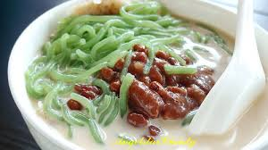
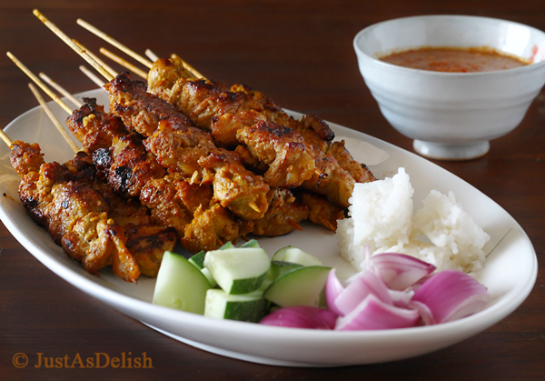
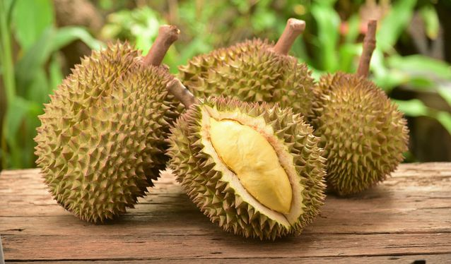

About Kuala Lumpur
Kuala Lumpur is the capital of Malaysia. Its modern skyline is dominated by the 451m-tall Petronas Twin Towers, a pair of glass-and-steel-clad skyscrapers with Islamic motifs. The towers also offer a public skybridge and observation deck. The city is also home to British colonial-era landmarks such as the Kuala Lumpur Railway Station and the Sultan Abdul Samad Building.
Check out more about KL.
The Iconic Building in There
- The Petronas Towers (KLCC)

- The Kuala Lumpur Tower (KL Tower)

- Sultan Abdul Samad Building
- Istana Budaya Titiwangsa

Top 5 Iconic food in Malaysia
One best thing live in Malaysia is everyday can enjoy different food at every where. Check out below top 5 best food in Malaysia and you should try when you come travel at Malaysia
- Nasi Lemak

- Roti Canai

- Chendul
 - Satay
 - Durian
